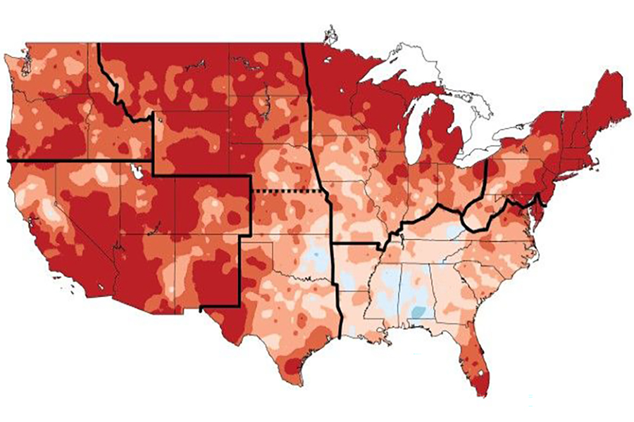

国际油价 / Global Oil Prices
布伦特原油与WTI美国原油最新市场行情。
Brent and WTI crude oil market quotations.
Brent 最新行情 ↗
WTI 最新行情 ↗
价格及更新时间以行情提供方为准。
06
俄罗斯袭击使乌克兰城市陷入停电，泽连斯基警告更多导弹袭击
Russian strikes plunge Ukrainian city into blackout as Zelenskyy warns of more missile attacks
俄罗斯的袭击导致第聂伯市大规模停电。
Russian strikes caused major power outages in Dnipro as a reported Ukrainian drone attack sparked a fire at a Russian oil refinery.
CNBC · 2026-10-30
原始报道 / Original source ↗07
克雷默的下周展望：预计科技财报和中期选举将带来更多波动
Cramer’s week ahead: Expect more volatility as tech earnings, midterms loom
投资者期待苹果、AMD等公司的财报，以及中期选举和每月就业报告。
Investors await earnings from Apple, AMD, and other major companies, as well as the midterm elections and the monthly jobs report.
CNBC · 2026-10-30
原始报道 / Original source ↗08
阿拉斯加参议院选举的刑事调查仍在进行中
Criminal investigation of Alaska Senate race is 'ongoing,' U.S. Attorney says
阿拉斯加选举的赢家可能决定共和党是否保住美国参议院的多数席位。
The winner of the Alaska election could determine whether Republicans retain their majority in the U.S. Senate.
CNBC · 2026-10-30
原始报道 / Original source ↗09

美联储在通胀顽固的情况下维持利率稳定
Fed holds interest rates steady even as inflation remains stubborn
美联储选择维持基准利率不变，但投资者普遍预计将在下次会议上加息。
The Federal Reserve opted to leave its benchmark interest rate unchanged — but investors widely expect the central bank to raise rates at its next meeting.
NPR · 2026-10-28
原始报道 / Original source ↗10

以色列选举中的对手们发出胜利的语气，但结果尚不明朗
Rivals in Israel Election Strike Tone of Triumph, but Outcome Is Far From Clear
内塔尼亚胡和反对派领袖加迪·艾森科特在午夜后向支持者发表讲话，均表示对领导以色列下届政府充满信心。
Addressing supporters after midnight, Prime Minister Benjamin Netanyahu and Gadi Eisenkot expressed confidence that they will lead Israel’s next government.
New York Times · 2026-10-28
原始报道 / Original source ↗11

美国最高法院面临关于移民法的重要任期
U.S. Supreme Court faces consequential term on immigration law
特朗普总统的移民政策引发的案件和争议正在进入最高法院。
Cases and controversies from President Trump's aggressive immigration are making their way to the Supreme Court this term.
NPR · 2026-10-29
原始报道 / Original source ↗12

研究指出自1980年以来气温上升最明显的州
Study pinpoints states with steepest warming trends since 1980
研究结果表明美国各州最需要适应措施的地方。
The findings indicate where adaptive measures are needed most around the United States.
MIT News · 2026-10-30
原始报道 / Original source ↗